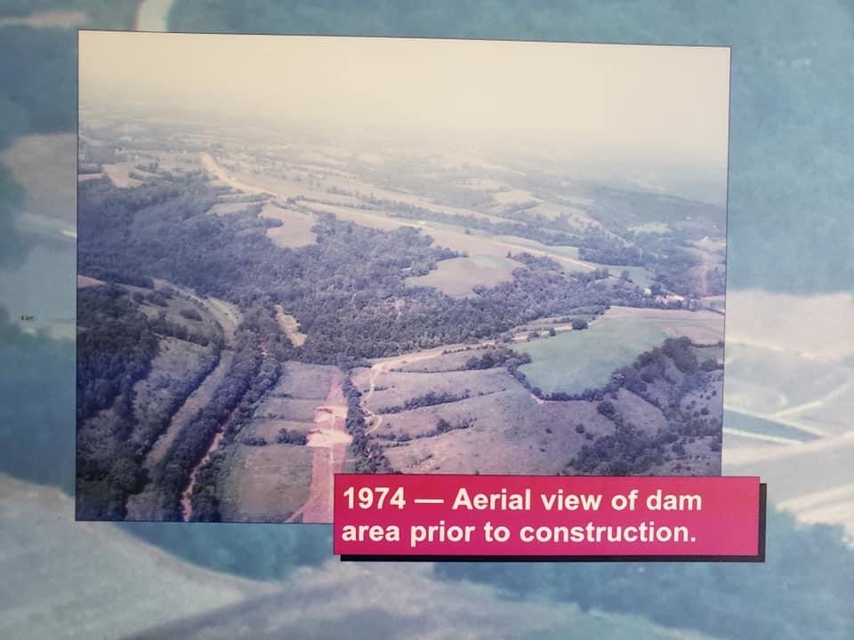
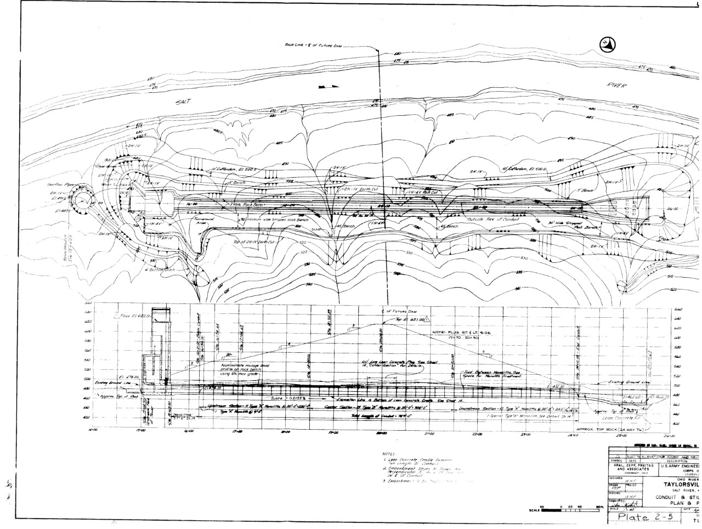

Caption for Cesium slideshow
Taylorsville Lake: Pre-Construction to Today
Taylorsville, Spencer County, Kentucky 1979-2023
Background
In the 20th century, the US Army Corps of Engineers were authorized to build dams across the state of Kentucky to mitigate flooding effects on communities. Two of these communities, Shepardsville, Ky and Taylorsvile, KY, are located on the Salt River in central Kentucky. Construction of the dam project began in June 1974 and work was completed in 1983.
This project is meant to show the need for damming the Salt River at Taylorsville, highlight parts of the construction process and show how the dam and lake function today. The 1978 Master Plan was used during the design and implementation process of the dam and guided operations for almost 40 years. The 2022 Draft Master Plan provided an update to the 1978 Plan and will guide lake and dam operations for the next 25 years.
Need for Intervention
For decades, communities along the Salt River faced effects of flooding. In April 1948, construction of a levee began in Taylorsville to protect residents from flood waters. This was authorized by Congress under the 1936 Flood Control Act. However, Shepardsville had no protection from flood waters.
The Salt River Watershed is located in Central Kentucky. The Chaplin, Beech Fork, Rolling Fork and Floyd's Fork Rivers all drain into the Salt River before it drains the Ohio River near West Point, Ky. During heavy rain events, the watershed will experience flooding as water runs off the steep knobs that surrond most of the area. Prior to the damming of the Salt River, water from the Ohio River would back up into the rivers in the watershed during flood events and cuase additional flooding.
Taylorsville
Mud on a street in Taylorsville, Ky. after a flood in 1940
Mud on a street in Taylorsville, Ky. after a flood in 1940
Mud on a street in Taylorsville, Ky. after a flood in 1940
Preperation for levee construction
Completed levee. The bridge in the background is the crossing for KY-55 over the Salt River
Shepardsville
Flooding in downtown Shepardsville in 1909.
Flooding in 1937 forced people to evacuate their homes. Some evacuated to neighbors on higher ground but were forced to leave as flood waters continued to rise. Flood waters were said to be 8 feet deep or more.
Flooding of the Salt River in 1940 near the L&N Railroad bridge in Shepardsville, KY.
Flooding of the Salt River in 1940 near the L&N Railroad bridge in Shepardsville, KY.
Pre Construction Aerial Images
1952 Aerial view of the dam site before construction. The Salt River can be seen meandering through the steep hills. The dam site is located just north of the black center marker on the bottom of the picture, where the river has a sort of straight patch between two meanders.
1959 Aerial view of the dam site before construction. The Salt River can be seen meandering theough the steep hills. The same straight patch of river from the 1952 aerial photo can be seen toward the left side of the photo. The river to the left of this straight patch is now the tailwater area.
Aerial view of the dam site before construction. The Salt River can be seen on the left side of the image, with the banks lined by trees. The river valley is also more observable here, with trees growing on the slopes and flat land located on the tops of the hills and along the river banks.
1972 Aerial view of the dam site before construction. More of the upstream river can be seen in this photo compared to previous aerial photos. Today, the upstream portion makes up the lake. The dam site is located in the straight section immediately following the almost 90 degree turn. A more normal meander following thr straight section, is part of the tailwater today.
Aerial Imagery Today
Google Earth aerial imagery from 2020. The orientation and scale are very similar to that of the 1972 aerial imagery above. The meader in the tailwater can be seen in both images. The extreme bend located in the top center of the 1972 photo is located where there is a T in the lake today (toward the top left corner of the image).
GEO 409 Maps
Shaded Relieft map of the dam area. Shaded Relief maps are used to understand the topography and geography of an area. Smooth areas show flatter features. Areas that appear rough show slopes into valleys or mountains.
Shaded Relieft Map![The valley fill and removal map highlights areas that have changed during the construction process until recent years. Blues represent areas that have been filled, while red represent areas that have been excavated. The dense blue area to the left of the center shows the fill that was used to create the dam. To the left of the dam, the patch of red shows the removal of some materials for the building of the roadway across the dam. To the right of the dam, the dense red area represents the excavation that created the emergency spillway.](ValleyFillAndRemoval.jpg)
The valley fill and removal map highlights areas that have changed during the construction process until recent years. Blues represent areas that have been filled, while red represent areas that have been excavated. The dense blue area to the left of the center shows the fill that was used to create the dam. To the left of the dam, the patch of red shows the removal of some materials for the building of the roadway across the dam. To the right of the dam, the dense red area represents the excavation that created the emergency spillway.
Valley Fill/ RemovalCredits
Visualizations created from lidar data provided by KyFromAbove in ArcGIS Pro, Blender and Cesium Ion. Additional sources of information (design documents and construction photos) from US Army Corps of Engineers, Louisville District, April, 2023. Aerial Maps from USGS and Google Earth. Flood Images from Bullitt County History and UK Libraries.
Page and visualizations created by Katye Berry for GEO 409, Department of Geography, University of Kentucky. Spring 2023.
Dam Design Process
Civil Engineers for this project were tasked with determining the best location for the dam, which included determining the upstream communities that would be impacted. They were also responsible for conducting tests related to the soil composition, like those in the Foundation Report and for determining how much storage the dam would need. Each of these factors impacted the proposed design. Shown below are design documents used in the building of Taylorsville Lake Dam.
Designed dam cross sections at various stations. The drawings show important elevations such as the seasonal pool elevation and the spillway crest elevation and shows the various fill materials used in different parts of the dam.
Conduit and stilling basin design plan. The control tower is on the left side of the drawing (the control tower is illustrated in the dam cross section at the bottom of the drawing). The stilling basin (tailwater area) is on the left side of the drawing. The conduit was built to the side of the river bed. which helps to prevent potential failures. Key elevations are marked on the drawing.
The control tower is used to control discharge from the lake. 6 gates can be opened to closed to allow more or less water to flow out though the conduit. Key elevations such as the seasonal pool and spillway crest are marked on the drawings.
Aerial dam and spillway plan, with pre construction contours. Access roads, storage areas and elevations are indicated on the map. The dam can be seen to the left of the center and the spillway at the top center.
Part 1 of the General Plan for the dam and spillway. This is downstream of the outflow from the lake. The thick black line on the right side of the map is the road to the tailwater that was used during construction and is still used today.
Part 2 of the General Plan for the dam and spillway. The dam and spillway are shown in the center. The area to the right of the dam site is now underwater. The road to the tailwater area is also shown.
Dam Construction Photos
Construction of the control tower and conduit. The control tower will have multiple gates that can be used to control the discharge of water into the conduit. The beginning of the conduit can be seen behind the foundation of the control tower.
Construction of the conduit that will release water from the lake to the stilling basin. The size of the conduit can be visulaized by the man stanidng inside. The conduit is made of concrete and reinfirced with rebar as seen at teh bottom of the photo.
Conduit construction prior to dam fill. Part of the stilling basin can be seen at the end of the conduit. Today, the area to the right side of the picture has a parking lot ad picnic area. Sidewalks line both sides of the river channel providing an area for fisherman.
Construction of the control tower looking toward the tailwater area. The 6 openings will have gates that will be used to control the discharge of water.
The stilling basin and end of the conduit are shown in this photo. Construction of the control tower can be seen in the background. once filled, the dam will be between the stilling basin and control tower.
Aerial view of the dam site during construction. Most of the dam in completed, with work still occuring on the tailwater side. The 6 gates of the control tower can be seen from this view. The deck area on the top of these gates is the service deck. Today, seasonal pool elevation falls just below the service deck.
Aerial view looking toward what is now the lake. The top of the conduit can still be seen. the control tower can be seen just behind the dam. Today, there is a walkway connecting the dam to the control tower. The area at the bottom of the photograph is now the tailwater area, which has area for fisherman and a picnic area. The vistor center can be seen in the top righ corner.
Construction on the dam and tailwater area has been completed and the lake has been impounded. The spillway on the lake side of the dam can be seen (to the right of center the rock side of the spillway is shown). The road over the dam is still under construction.